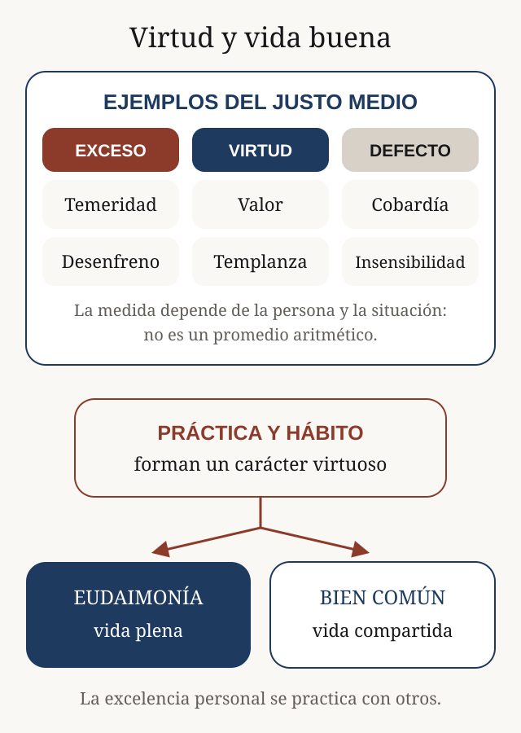

5 min de lectura
Virtud, teleología y plenitud moral en la ética clásica
Analiza la virtud, la formación del carácter y la prudencia como condiciones de una vida plena y compartida.

Ejemplos del justo medio en el valor y la templanza, y relación de la virtud con la vida plena y compartida.
Temas del ensayo
virtud · justo medio · teleología · hábito · eudaimonía
Introducción
La ética clásica relaciona las acciones con la naturaleza y los fines del agente. Para juzgar una conducta importan sus consecuencias, la intención y los bienes humanos que realiza. Esta orientación teleológica permite explicar por qué la virtud no es una convención arbitraria.
Platón y Aristóteles rechazan que la vida buena consista en perseguir todo placer posible. El placer acompaña una actividad realizada, pero no puede ser el fin último si cada apetito pudiera reclamar prioridad. La República y la Ética nicomáquea ofrecen dos formas de mostrar que el placer y los deseos necesitan un criterio superior.
Teleología del obrar humano
Toda actividad humana posee un fin, aunque no todas las acciones sean plenamente conscientes. El médico actúa para curar y el constructor para levantar una casa. Los fines particulares se integran en otros más amplios: un oficio contribuye a la subsistencia, y la comunidad ofrece condiciones para desarrollar una vida plena. Aristóteles pregunta cuál es el fin que no se busca por otro y afirma que la eudaimonía posee esta condición (Aristóteles, 1985, Ética nicomáquea, I, 1–7, 1094a–1098a).
El término no se reduce a una sensación subjetiva. Aristóteles la define como una actividad del alma conforme a la virtud y considera la vida completa como su marco adecuado (Aristóteles, 1985, Ética nicomáquea, I, 7, 1098a16–20). La felicidad incluye actividad y virtud; no depende de un instante aislado ni de un estado emocional desvinculado de las elecciones.
Platón también vincula la acción con el conocimiento del bien. En la República, la justicia requiere que cada parte del alma cumpla su función bajo la dirección de la razón; el orden interior hace posible una vida virtuosa (Platón, 1988, República, lib. IV, 427e–444e).
Crítica del hedonismo
El hedonismo identifica el bien con el placer y deja a los deseos fijar sus propios límites. Sentir placer no demuestra que una actividad sea buena. Aristóteles distingue los placeres según las actividades que acompañan: el placer adecuado a una actividad excelente la perfecciona, mientras que el asociado a una actividad viciosa puede reforzarla.
Platón recurre a un criterio distinto. En el libro IX de la República, describe cómo los deseos sin medida pueden someter la razón y dar forma a una vida tiránica. La búsqueda de un placer inmediato no ofrece un criterio estable del bien: hace depender la conducta de apetitos cambiantes (Platón, 1988, República, lib. IX, 571a–576b).
Formación del carácter
La virtud moral se forma mediante la práctica. Los actos repetidos desarrollan disposiciones estables que permiten actuar con mayor firmeza. Aristóteles sostiene que las personas se hacen justas al realizar actos justos y moderadas al realizar actos moderados (Aristóteles, 1985, Ética nicomáquea, II, 1, 1103b1–2). El hábito no sustituye a la elección: prepara el carácter para elegir bien.
La educación debe formar las inclinaciones y enseñar a disfrutar de lo noble. La persona virtuosa no obedece por miedo externo ni renuncia a todo deseo. Percibe correctamente, desea conforme a la razón y actúa con libertad. El placer y el dolor cumplen una función formativa: las respuestas adecuadas consolidan el carácter.
Virtudes morales y intelectuales
La virtud moral perfecciona los afectos y las acciones particulares. Coraje, templanza, justicia y generosidad no consisten en simples puntos medios cuantitativos. Son disposiciones deliberadas que encuentran la medida propia de la situación. Aristóteles denomina phrónesis o prudencia a la sabiduría práctica que permite identificar lo conveniente en cada circunstancia (Aristóteles, 1985, Ética nicomáquea, VI, 5, 1140a24–1140b30).
La virtud intelectual posee una relación distinta. La ciencia conoce principios universales y la sabiduría contempla las causas más elevadas. La frónesis no es ciencia teórica ni astucia. Delibera rectamente sobre los medios de la vida buena y puede aplicar principios universales a acciones singulares (Aristóteles, 1985, Ética nicomáquea, VI, 2–5, 1139b15–1141b8).
Las virtudes se requieren mutuamente. La ciencia sin justicia puede instruir para fines dañinos, y la buena voluntad sin conocimiento puede practicar ciegamente. En la integridad moral, el intelecto reconoce el fin verdadero y las facultades apetitivas lo desean mediante el carácter formado.
El justo medio
La doctrina del justo medio no propone una regla mecánica ni vuelve indeterminada la moral. En la templanza se busca una respuesta proporcionada a la naturaleza humana y a las circunstancias. El exceso y el defecto son disposiciones opuestas; la prudencia determina qué acción corresponde en cada caso (Aristóteles, 1985, Ética nicomáquea, II, 6, 1106b36–1107a8).
El medio no es un promedio aritmético ni una cantidad idéntica para todas las personas. Comer con moderación depende de la situación y de las necesidades del agente; la medida se determina mediante la razón práctica. Por ello, el justo medio no equivale a un cálculo egoísta ni a una respuesta automática.
Plenitud racional y bien común
La eudaimonía se desarrolla en comunidad. El ser humano ejerce su racionalidad al conocer, buscar la verdad y actuar justamente con otros. Platón vincula la justicia del alma con la de la polis; Aristóteles sitúa la virtud en comunidades donde es posible deliberar y practicar el bien.
La libertad clásica se ejerce en relación con fines. La voluntad alcanza su plenitud cuando elige lo que el agente reconoce como verdaderamente bueno. La noción moderna de dignidad personal tiene una historia posterior; en la ética antigua, el énfasis recae en la excelencia de las capacidades humanas y en la vida conforme a la virtud.
Referencias
Aristóteles. (1985). Ética nicomáquea. Ética eudemia (J. Pallí Bonet, Trad.). Editorial Gredos. (Obra original publicada ca. 349 a. C.).
Platón. (1988). Diálogos IV: República (C. Eggers Lan, Trad.). Editorial Gredos. (Obra original publicada ca. 375 a. C.).
Cómo citar
Equipo de Filosofía Clásica. (2026). Virtud, teleología y plenitud moral en la ética clásica. Aragón Scholé. https://oregcore-ui.github.io/aragon-schole/articulos/virtud-teleologia-y-plenitud-moral-en-la-etica-clasica/
Equipo autor
Equipo de Filosofía Clásica
- Victor Manuel Oregon Gomez
- Ayelen Castro Sarmiento
- Naomi Verónica Castro Mayoral
- Gema Daniela Martínez Hernández
- Camila Gabriela Martínez Celedonio